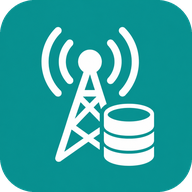

Stable
The default database for ROMs. It is built from maintained
sources, refreshed by automation, and published as
generated/index.json.

Open Carrier DataPublic carrier settings database
Open Carrier Data stores neutral carrier profiles for APNs, MMS, IMS capabilities, RCS, eSIM support, and Android CarrierConfig values. Stable data comes from maintained sources. Community input is accepted as checked claims, kept separate, and promoted only when it is safe enough.
{
"schema_version": 1,
"profile_id": "open.00101.9739cf7d0409",
"display_name": "Example Mobile",
"match": {
"mccmnc": ["00101"],
"android_carrier_ids": [1234],
"spn": ["Example"]
},
"capabilities": {
"volte": "supported",
"vowifi": "supported",
"mms": "supported"
},
"addons": {
"wifi_calling": {
"hide_menu_on_auth_failure": true
}
},
"android_apns": [
{
"name": "Example internet",
"apn": "internet.example",
"types": ["default", "supl"]
}
]
}MCC/MNC, Android carrier ID, SPN, GID, ICCID-prefix, and IMSI-prefix matching facts.
Data, MMS, IMS, XCAP, and related APN records.
VoLTE, Wi-Fi Calling, VoNR, SMS over IMS, and conference support.
CarrierConfig, APN, and lookup data for ROM tooling.
Model
Open Carrier Data is not a live lookup API. It is a public source database that tooling can convert into files or app data a phone already has when carrier settings are needed.
Refresh upstream, vendor, or open-source carrier data through source adapters.
Store canonical neutral carrier JSON under carriers/.
Create manifests and platform-specific output under generated/.
ROMs, carrier apps, or update tools package the generated data.
Carrier settings are needed during SIM load, network attach, IMS registration, calling, messaging, and emergency flows. Those paths should not depend on a network request to this project.
Community
Community reports are important for edge cases and fast fixes, but they should not directly overwrite stable phone configuration. A claim says what should change, how it was tested, when it was last verified, and when it expires.
The default database for ROMs. It is built from maintained
sources, refreshed by automation, and published as
generated/index.json.
Claims with enough evidence to test. Useful for review and opt-in builds, but not default phone behavior.
Valid non-expired claims from contributors. Useful for investigation, missing carriers, and edge cases.
CI computes risk from the changed fields, match breadth, change type, evidence, freshness, and conflicts with stable data.
{
"schema_version": 1,
"claim_id": "claim.example.mobile.mms.20260705",
"summary": "Example Mobile MMS works with this APN.",
"status": "proposed",
"carrier_match": {
"mccmnc": ["00101"],
"spn": ["Example"]
},
"change_type": "add",
"changes": {
"android_apns": [
{
"name": "Example MMS",
"apn": "mms.example",
"types": ["mms"],
"mmsc": "https://mms.example/mmsc"
}
]
},
"evidence": [
{
"type": "device_test",
"date": "2026-07-05",
"result": "works",
"summary": "MMS send and receive were tested on one device."
}
],
"last_verified": "2026-07-05",
"expires": "2027-07-05"
}Carrier settings change. Expiry prevents old community data from looking trustworthy forever. Low-risk claims can live longer; higher-risk claims need fresher evidence.
Report
You do not need to understand the whole database first. Pick the path that matches what you know, and do not share private SIM, account, device, or log data.
Open a guided issue. Include the carrier, country, affected feature, what happened, what you expected, and how you tested it.
Suggest the source. Good sources can be refreshed by automation and translated into safe public carrier facts.
Open a tested-claim issue, or fork the repo and submit a pull request with a claim, evidence, test date, safe match details, and an expiry date.
Open a pull request with validator, generator, schema, importer, or documentation changes and run the relevant checks.
Private vendor or OEM snapshots must be refreshed and carry a recent checked date before they can affect stable data. Checks older than about six months are treated as stale. If a source stops being maintained, missing data is safer than stale data that still looks official.
Carrier name, country, public brand, MCC/MNC, Android carrier ID, SPN, GID prefix, public source link, tested feature, result, and test date. Public APN usernames/passwords are okay only when they are carrier settings, not private account credentials.
Phone numbers, account data, personal passwords, private vendor credentials, full IMSI, full ICCID, IMEI, serial numbers, raw logs, raw bugreports, raw firmware dumps, or private vendor responses.
Snapshot
Treat the repository like a versioned carrier snapshot. Read the generated manifest, load the listed profiles, and generate the format your phone system or build pipeline consumes.
generated/index.json as the snapshot manifest.generated/android/mccmnc-index.json when the input is a SIM MCC/MNC.generated/android/carrier-id-index.json when Android already resolved a carrier ID.generated/android/carrier-config-list.xml when tooling wants Android-style CarrierConfig XML.git clone https://github.com/open-carrier-data/open-carrier-data.git
cd open-carrier-data
python3 - <<'PY'
import json
from pathlib import Path
root = Path(".")
index = json.loads((root / "generated/index.json").read_text())
profiles = [
json.loads((root / entry["path"]).read_text())
for entry in index["profiles"]
]
print(f"loaded {len(profiles)} carrier profiles")
# Convert profiles into local platform output.
PYSchema
Profiles expose only the fields that should be public and reusable. Private source material and raw vendor dumps do not belong in this repository.
matchHow tooling recognizes the carrier or MVNO.
mccmncandroid_carrier_idsgid1_prefixesgid2_prefixesiccid_prefixesimsi_prefix_patternsspncapabilitiesSimple feature states that generators can map to platform values.
supportedunsupportedconditionalunknownandroid_apnsAPN records for Android-style data, MMS, IMS, XCAP, and related profiles.
nameapntypesandroid_carrier_configReviewed Android CarrierConfig key/value overrides.
carrier_volte_available_boolcarrier_wfc_ims_available_boolsupport_ims_conference_call_booladdonsSmall optional neutral facts outside one generated Android field.
wifi_callingrcsoperator_displayAndroid
Android already has carrier configuration mechanisms. Open Carrier Data should feed those mechanisms instead of bypassing them with one-off runtime hacks.
Generate CarrierConfig values for a platform config app, carrier config service, ROM build step, update package, or Android-style XML asset.
Generate APN records for Android telephony provider import or ROM packaging, including data, MMS, IMS, XCAP, and emergency profiles.
Preserve matching facts so generators can map MCC/MNC, MVNO, SPN, IMSI-prefix patterns, and carrier IDs to the right profile.
Use generated fixtures to compare expected values with device logs, known good stock behavior, or upstream carrier config databases.
Examples
{
"schema_version": 1,
"profile_id": "open.00101.9739cf7d0409",
"display_name": "Example Mobile",
"match": {
"mccmnc": ["00101"],
"android_carrier_ids": [1234],
"spn": ["Example"]
},
"capabilities": {
"volte": "supported",
"vowifi": "supported",
"mms": "supported",
"rcs": "unknown"
},
"addons": {
"wifi_calling": {
"hide_menu_on_auth_failure": true
},
"operator_display": {
"prefer_spn": true
}
}
}import json
from pathlib import Path
root = Path("/path/to/open-carrier-data")
mccmnc_index = json.loads((root / "generated/android/mccmnc-index.json").read_text())
carrier_id_index = json.loads((root / "generated/android/carrier-id-index.json").read_text())
sim_operator = "26202"
android_carrier_id = "2536"
candidates = carrier_id_index["android_carrier_ids"].get(android_carrier_id)
if candidates is None:
candidates = mccmnc_index["mccmnc"].get(sim_operator, [])
profiles = [json.loads((root / item["path"]).read_text()) for item in candidates]
# Apply remaining checks such as Android carrier ID, SPN, GID, ICCID prefix, or IMSI prefix before using a profile.
print(f"found {len(profiles)} candidate profiles"){
"android_carrier_config": {
"carrier_volte_available_bool": true,
"carrier_wfc_ims_available_bool": true,
"support_ims_conference_call_bool": true
},
"android_apns": [
{
"name": "Example internet",
"apn": "internet.example",
"types": ["default", "supl"],
"protocol": "IPV4V6",
"roaming_protocol": "IPV4V6"
}
]
}Boundaries
The public repository should be narrow, generated, and safe to mirror. Private source material can inform automated importers, but it must not be published raw.
Maintained upstream sources that can be refreshed by automation.
Derived manifests and platform exports built from the neutral profile set.
Raw or full IMSI values, full personal ICCIDs, phone numbers, personal passwords, private vendor credentials, account records, raw firmware dumps, or private logs.
A live API call from SIM loading, emergency calling, IMS registration, or dialer paths.
Resources
These links are the main starting points for consumers, contributors, and Android integration work.